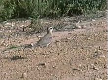
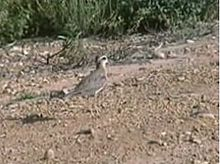

| Caspian Plover | |
|---|---|
|  | |
| Conservation status | |
| Binomial name | |
| Charadrius asiaticus (Pallas, 1773) |
| Caspian Plover | |
|---|---|
|  | |
| Conservation status | |
| Binomial name | |
| Charadrius asiaticus (Pallas, 1773) |
The Caspian Plover (Charadrius asiaticus) is a wader in the plover family of birds.
It breeds on open grassland in central Asia, mainly to the north and east of the Caspian Sea. This bird breeds in loose colonies, with three eggs being laid in a ground nest. These birds migrate south in winter to east Africa, usually still on grassland or arable. This plover is a very rare vagrant in western Europe. It is also a rare vagrant to Australia.
It feeds in a similar way to other plovers picking insects and other small prey mainly from grassland or arable.
This attractive plover is slightly larger than Ringed Plover, and it recalls Greater Sandplover and Lesser Sandplover in appearance. It is slimmer and longer-legged than the sandplovers, and has a much stronger white supercilium, and a long thin bill. It also lacks white tail sides and a weak wing bar.
Summer males have grey-brown backs and a white face and belly. The breast is chestnut, bordered black below. Other plumages have a grey-brown breast band, although the summer female may show a hint of chestnut. The call is a sharp chip.
The Caspian Plover is one of the species to which the Agreement on the Conservation of African-Eurasian Migratory Waterbirds (AEWA) applies.

{kind=link}